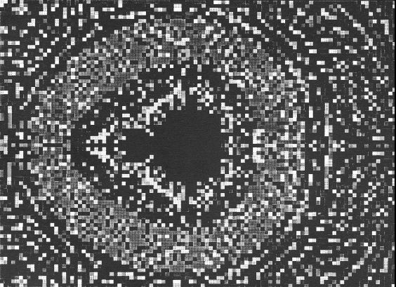

| Here is the smallest midget image Adam generated. The cardioid corresponds to
a |
|  |
| How small is this? |
| The magnification factor between this and the whole Mandelbrot set is
|
| How small is this? |
| Suppose the diameter of the universe is 100 billion (= 1011) light years. |
| The diameter of a proton is about 10-15 meters. |
| Then the diameter of the universe is about 1039 times the diameter of a proton. |
| Now suppose the 300-cycle midget is the size of a proton. |
| Suppose the universe containing this proton is itself a proton in a larger universe, |
| and that universe is a proton in a still larger universe, |
| and that universe is a proton in a still larger universe, |
| and that universe is a proton in a still larger universe, |
| and that universe is a proton in a still larger universe, |
| and that universe is a proton in a still larger universe, |
| and that universe is a proton in a still larger universe, |
| and that universe is a proton in a still larger universe, |
| and that universe is a proton in a still larger universe. |
| That last universe is the size of the whole Mandelbrot set. |
Return to Hurwitz-Robucci scaling.